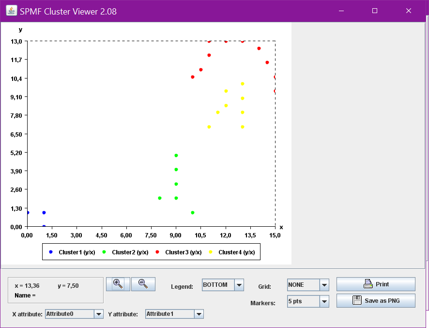

Visualizing clusters using the Cluster Viewer (SPMF documentation)
This example explains how to use the Cluster Viewer of the SPMF open-source data mining library.
How to run this example?
- If you are using the graphical interface, (1) choose the "Vizualize_clusters_of_instances" algorithm, (2) select the input file "clustersDBScan.txt" , (3) and click " Run algorithm" .
- If you want to execute this example from the command line,
then execute this command:
java -jar spmf.jar run Vizualize_clusters_of_instances clustersDBScan.txt
in a folder containing spmf.jar and the example input file clustersDBScan.txt. - If you are using the source code version of SPMF, to run respectively this example, launch the file " MainTestClusterViewerFile.java" in the package ca.pfv.SPMF.tests.
What is the Cluster Viewer?
The Cluster Viewer is a tool offered in SPMF for visualizing a set of clusters using a chart. The Cluster Viewer provides some basic functions like zooming in, zooming out, printing, and saving the picture as an image. It is useful for visualizing the clusters found by clustering algorithms such as DBScan, K-Means and others.What is the input of the Cluster Viewer?
The input is one or more clusters. A cluster is a list of instances. An instance is here a list of floating-point decimal numbers (a vector of double values).
Clusters are produced by clustering algorithms such as K-Means and DBScan. An example of clusters found by the DBScan algorithm is the following:
| Cluster | Data points |
| Cluster1 | (1, 0), (1, 1), (0, 1) |
| Cluster2 | (10, 10), (10, 13)(13, 13) |
| Cluster3 | (54, 54), (57, 55) (55, 55) |
This example set of clusters is provided in the file clustersDBScan.txt of the SPMF distribution.
What is the result of running the time series viewer?
Running theCluster Viewer will display the clusters visually. For example, for the above clusters, the clusters will be displayed as follows (note that this may vary depending on your version of SPMF).

Input file format
The input file format used by the cluster viewer is defined as follows. It is a text file.
The text file first defines the attributes used to describe the instances that have been clustered. An attribute is defined using the keyword "@ATTRIBUTEDEF=" followed by an attribute name, which is a string. Each attribute is defined on a separated line.
Then, the list of clusters is given, each cluster is specified on a separated line. For each cluster, the list of instances contained in the cluster is specified. An instance is a name followed by a list of double values separated by " " and between the "[" and "]" characters.
For instance, the input file for this example is the following:
@FILETYPE="Clusters"
@SOURCE="SPMF SOFTWARE https://philippe-fournier-viger.com/spmf/"
@ATTRIBUTEDEF=X
@ATTRIBUTEDEF=Y
[Instance2 1.0 0.0][Instance0 1.0 1.0][Instance1 0.0 1.0]
[Instance3 10.0 10.0][Instance4 10.0 13.0][Instance5 13.0 13.0]
[Instance6 54.0 54.0][Instance9 57.0 55.0][Instance7 55.0 55.0]
The first two lines are optional metadata. The first line indicate the type of file and the second line describes the source of the data. Then it is the data section.It indicates that there are two attributes named "X" and "Y" and that there are three clusters. The first cluster contains three instances: (1, 0), (1, 1) and (0, 1).
Implementation details
The Cluster Viewer has been implemented by reusing and extending some code provided by Yuriy Guskov under the MIT License for displaying charts.